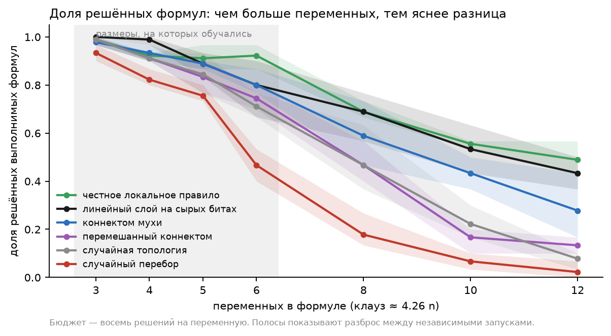
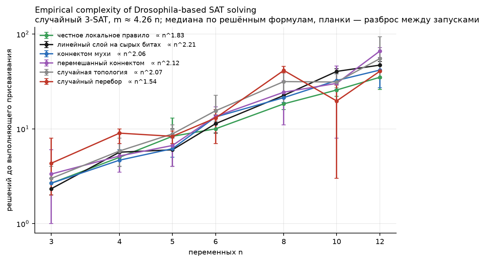

Коннектом дрозофилы как неизменяемый резервуар для задачи выполнимости, и что из этого следует, а что нет
Коротко. Мы полушутя спросили, может ли коннектом мухи помочь решать задачу выполнимости булевых формул — классическую NP-полную задачу. Честный ответ: нет. Он её не решает, не масштабируется, и никакого отношения к вопросу P против NP всё нижеследующее не имеет.
Зато нашлось кое-что стоящее. Если использовать сеть как неизменяемый нелинейный резервуар, поверх которого обучается один линейный слой, настоящий коннектом доносит информацию о задаче до своих выходных нейронов почти без потерь: от 95 до 99 процентов входных битов линейно восстанавливаются из одного такта в 15 миллисекунд, а линейный слой на этих признаках воспроизводит честное рукописное правило с точностью от 96.5 до 96.9 процента. Две контрольные сети ровно того же размера — перемешанная с сохранением всех степеней и случайная топология — проваливаются полностью: их линейные слои не выучивают ничего, кроме ответа большинства. По дороге первая наша попытка выдала политику, которая выглядела рабочей, а на деле вовсе не смотрела на вход; проверка, которая это поймала, описана ниже, и она здесь самое полезное.
Основной эксперимент спрашивал, что коннектом добавляет к управлению телом. Этот спрашивает нечто меньшее и более странное: несёт ли активность биологической схемы связей полезную информацию о символьной задаче, о которой она заведомо ничего не знает?
Рамка — резервуарные вычисления. Резервуар это неизменяемая динамическая система, которую никто не обучает: вы подаёте в неё вход, даёте ей эволюционировать и читаете состояние. Всё обучение сосредоточено в одном линейном слое сверху. Резервуары полезны именно потому, что достаточно богатая динамика превращает простой вход в высокоразмерное, размазанное во времени представление, из которого линейное считывание умеет извлечь неожиданно много. Вопрос здесь в том, получается ли хороший резервуар из 138 639 нейронов, соединённых так, как соединён мозг мухи, и — это и есть главное — лучше ли биологическая проводка произвольной проводки того же размера.
Всё дальнейшее касается игрушечных размеров. Скажем прямо сейчас и повторим в конце: ни один результат отсюда ничего не говорит о сложности SAT, о P против NP и о том, чем занимаются мозги мух в природе.
Случайный 3-SAT с числом клауз в 4.26 раза больше числа переменных — то самое соотношение, при котором случайные формулы наиболее трудны. Обучающая выборка: от 3 до 6 переменных, по сорок выполнимых формул на размер. Тест внутри распределения: те же размеры, по тридцать выполнимых и десять невыполнимых, ни одна не встречается в обучении. Тест на экстраполяцию: 8, 10 и 12 переменных, снова по тридцать и десять.
Полный перебор размечает каждую формулу как выполнимую или нет и проверяет каждое решение, которое агент объявил найденным. В политику он не входит никогда. При двенадцати переменных перебор — это точный оракул, поэтому отдельный SAT-солвер не понадобился; проверка «ни один агент никогда не решил невыполнимую формулу» прошла везде.
Агент обходит переменные формулы по одной в случайном порядке, который перемешивается после каждого полного прохода, и для каждой решает, менять ли её значение. Один и тот же оценщик применяется к каждой переменной; число переменных в считывание не входит нигде. Для теста на экстраполяцию это принципиально: политику, обученную на шести переменных, можно применить к двенадцати без дополнений, масок и позиционных весов, которые могли бы запомнить конкретный размер.
Агент видит ровно три бита на решение: текущее значение переменной, входит ли она положительно хотя бы в одну сейчас невыполненную клаузу и входит ли отрицательно. Это жёсткое сжатие формулы — две совершенно разные задачи могут дать одинаковое наблюдение, — так что наблюдаемость здесь частичная по построению. Так и задумано, и именно это делает резервуар с памятью потенциально интересным: если он помогает, то помогает переносом истории, а не пониманием логики.
Бюджет — восемь решений на переменную. Успех означает, что все клаузы выполнены в пределах бюджета, и это подтверждено оракулом.
| Агент | Что видит | Что обучается |
|---|---|---|
| Случайный перебор | ничего | ничего: меняет значение с вероятностью одна вторая |
| Честное локальное правило | три бита | ничего: меняет, если переменная входит в невыполненную клаузу |
| Линейный слой на сырых битах | три бита | пять параметров |
| Коннектом мухи | спайки 1299 нисходящих нейронов | 1300 параметров |
| Перемешанный коннектом | то же, степени и веса сохранены | 1300 параметров |
| Случайная топология | то же, сохранены только размер и веса | 1300 параметров |
Три резервуара отличаются исключительно проводкой. Входные группы, считываемая популяция, модель нейрона, параметры и процедура обучения у них одинаковы.
Три бита наблюдения плюс один постоянно включённый канал возбуждают четыре группы по сорок сенсорных нейронов щетинок головы через штатные пуассоновские входы мозговой модели. На каждое решение сеть продвигается на 15 миллисекунд; её состояние сохраняется внутри эпизода и восстанавливается между эпизодами. Признаки — свежие спайки всех нисходящих нейронов за этот такт. Сам коннектом не меняется никогда: обучается только линейный слой.
Сначала мы обучали линейный слой подкреплением, награждая за прирост числа выполненных клауз. Обучение выглядело здоровым: к концу агент решал 22–25 из последних 25 обучающих эпизодов. На экстраполяции он решал около 20 из 90 — плохо, но не очевидно сломано.
Затем мы сделали проверку, без которой такой эксперимент ставить нельзя. Берём обученного агента и подаём ему вместо настоящего наблюдения одни нули. Если политика пользуется входом, качество обязано рухнуть. Оно не рухнуло: с обнулённым наблюдением агент решал от 97 до 114 задач из 120 против 104–110 с настоящим.
Политика выучила ровно одну вещь — всегда менять значение, — а «всегда менять» это вполне приличное случайное блуждание, которое лёгкие формулы решает. По одному лишь проценту решённых задач такой агент выглядел работающим. Он не работал.
Почему это здесь самый полезный абзац. Обученная модель, игнорирующая вход, по главной метрике может быть неотличима от той, что вход использует. Абляция стоит одного лишнего прохода оценки и решает вопрос однозначно. Теперь мы гоняем её на каждой обученной политике в этом проекте и приводим в каждой таблице ниже.
Непосредственная причина оказалась приземлённой. Состояние «переменная не входит ни в одну невыполненную клаузу» кодируется тремя нулевыми битами; без входа сеть молчит, вектор признаков нулевой, и линейному слою нечем отличить это состояние, кроме общего смещения. Мы добавили четвёртый, постоянно активный входной канал, чтобы у каждого состояния был ненулевой отклик. Это не утечка: считывание по-прежнему видит только спайки нисходящих нейронов. Результаты первой версии сохранены в репозитории как отрицательный контроль.
Прежде чем винить коннектом, мы спросили, был ли провал провалом оптимизации, а не представления. Обучили линейный декодер восстанавливать три входных бита из спайков нисходящих нейронов за один такт, с отложенной выборкой, и то же самое для битов предыдущего такта — чтобы измерить, сколько истории несёт состояние сети.
| Резервуар | значение переменной | «+» в невып. клаузе | «−» в невып. клаузе | предыдущий такт | активных нейронов за такт |
|---|---|---|---|---|---|
| Коннектом мухи | 98.6 % | 94.8 % | 99.7 % | 87–98 % | 3.5 % |
| Перемешанный, степени сохранены | 72.5 % | 68.1 % | 73.1 % | 77–81 % | 0.09 % |
| Случайная топология | 68.8 % | 73.3 % | 64.2 % | 63–66 % | 0.03 % |
Точность линейного декодера на отложенной выборке; случайный уровень — от 50 до 59 процентов в зависимости от бита. Последний столбец — доля из 1299 нисходящих нейронов, выдавших хотя бы один спайк за такт.
Ответ однозначен. В настоящем коннектоме входные биты доходят до нисходящей популяции практически нетронутыми, и заодно неплохо сохраняется предыдущий такт. В перемешанной сети они доходят испорченными, в случайной — ещё сильнее; обе суррогатные сети шевелят меньше двух нисходящих нейронов за такт против примерно сорока пяти у оригинала.
Значит, информация была на месте, а обучение с подкреплением её просто не нашло: градиентный подъём по 1300 весам за шестьсот эпизодов шумного и разреженного сигнала — не серьёзный оптимизатор. Написать на этом основании «коннектом не может» было бы ошибкой.
Решающий эксперимент не подкрепляющий, а обучение с учителем, и он разделяет два вопроса, которые план этого проекта требовал не смешивать: может ли агент научиться решать задачу и может ли он имитировать заведомо хорошую политику. Здесь мы спрашиваем только второе, потому что именно оно изолирует резервуар.
Мы обучили тот же линейный слой воспроизводить решения честного локального правила по признакам резервуара, на состояниях, посещённых под смешанной политикой, чтобы обучающие данные не были только удобной траекторией самого правила. Если резервуар представляет наблюдение адекватно, слой должен клонировать правило почти точно, а клон должен работать как правило. Если нет — значит, не может.
| Резервуар | точность клонирования | решено, n ≤ 6 | решено, n ∈ {8, 10, 12} | контроль с нулевым наблюдением |
|---|---|---|---|---|
| Сырые биты, без мухи | 100 % | 107–112 / 120 | 47–52 / 90 | 11–20 / 120 |
| Коннектом мухи | 96.5–96.9 % | 107–110 / 120 | 36–43 / 90 | 43–53 / 120 |
| Перемешанный коннектом | 84.8–85.8 % | 103–105 / 120 | 22–25 / 90 | 100–110 / 120 |
| Случайная топология | 84.7–85.9 % | 103–104 / 120 | 20–27 / 90 | 98–105 / 120 |
Доля большинства в обучающих данных клонирования равна 0.86, поэтому точность от 84.7 до 85.9 процента означает, что слой не выучил ничего сверх ответа «менять» на всё подряд. Последний столбец — абляция: случайный перебор решает 93 из 120 при нулевом наблюдении, так что величина около 100 означает, что политика входом не пользуется.
Лестница получилась чистая, и она стоила всей работы. Только настоящий коннектом позволяет линейному считыванию приблизить правило; обе суррогатные сети сваливаются в ответ большинства, имея столько же нейронов, столько же связей и то же множество весов. Столбец абляции говорит то же самое с другой стороны: политика на коннектоме теряет больше половины качества, когда наблюдение обнуляют, а суррогатные не теряют ничего, потому что никогда им и не пользовались.
Прямому доступу к трём битам коннектом всё равно уступает: 36–43 решённых против 47–52 на больших формулах. Четыре процента ошибок копирования накапливаются за эпизод длиной до девяноста шести решений, и разрыв — ровно это накопление.

Для полноты, и потому что log-log график попросят все, приводим медианное число решений до выполняющего присваивания, посчитанное по решённым формулам.

Все подогнанные показатели лежат между n1.5 и n2.2, что выглядит полиномиально и как утверждение о сложности не значит ничего, по трём независимым причинам. Медиана берётся только по решённым формулам, а доля решённых с ростом n падает, так что самые трудные экземпляры тихо покидают выборку: кривая описывает лёгкий хвост, а не задачу. Бюджет ограничен восемью решениями на переменную, поэтому большого числа не может получиться, даже если оно требуется. И случайный перебор, у которого хорошей сложности быть не может по определению, показывает самый пологий показатель из всех, n1.54, ровно по этим же причинам. График описывает подмножество решённых задач. Он ничего не измеряет.
Каждая обученная политика сопровождается абляцией с нулевым наблюдением, описанной выше. Кроме того:
Показывает, что настоящая проводка мухи доносит поданный сигнал до своих нисходящих нейронов заметно лучше, чем перемешивание, сохраняющее все степени и все веса, и заметно лучше случайного графа того же размера — достаточно хорошо, чтобы один линейный слой по одному снимку в 15 миллисекунд приблизил рукописное правило, чего суррогатные сети не могут вовсе. Это реальное, измеренное и воспроизводимое различие между биологической топологией и её контрольными моделями, и оно согласуется с тем, что основной эксперимент нашёл в поведении.
Не показывает, что коннектом что-то вычисляет. Декодер читает ровно те биты, которые мы сами подали; выигрывает та сеть, которая лучше их проводит. Проводимость — не вычисление, а хороший резервуар — не решатель.
Не показывает, что муха умеет решать SAT. Лучший агент на коннектоме решает меньше задач, чем правило длиной в одну строку, и оба круто теряют качество с ростом формул.
И не имеет отношения к вопросу P против NP. В формулах не больше двенадцати переменных, бюджет ограничен, подогнанные показатели степени получены на цензурированной выборке, а вся конструкция — курьёз, надстроенный над поведенческим экспериментом. Кто процитирует этот документ как свидетельство о классах сложности, процитирует его неправильно.
Код: sat_fly.py (задача, агенты, обучение, оценка, самопроверки), sat_decode.py (проба на декодируемость) и paper/sat_figures.py (рисунки). Наборы формул, логи всех запусков с поэкземплярными исходами, таблицы декодируемости и сводка лежат в results/sat-fly/; первая, вырожденная версия сохранена в results/sat-fly/v1-no-tonic/.
.venv-brain/bin/python sat_fly.py check
.venv-brain/bin/python sat_fly.py gen
.venv-brain/bin/python sat_fly.py run --agent heuristic --seed 0
.venv-brain/bin/python sat_fly.py run --agent fly --seed 0 --clone
.venv-brain/bin/python sat_fly.py run --agent fly-shuffled --seed 0 --clone
.venv-brain/bin/python sat_fly.py run --agent fly-random --seed 0 --clone
.venv-brain/bin/python sat_decode.py --kinds fly --seed 0 --episodes 60
.venv-body/bin/python paper/sat_figures.pyОдин резервуарный прогон занимает около сорока минут на ядро: каждое решение продвигает сеть из 138 639 нейронов на 15 миллисекунд модельного времени, а оценочный проход делает несколько тысяч решений. На машине с 32 ГБ разумно держать не больше четырёх параллельно.